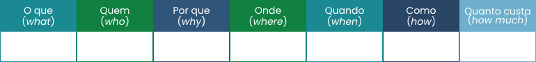

TÓPICO 1
DESCORTINANDO A LIDERANÇA: O QUE É PRECISO SABER SOBRE OS LÍDERES?
TÓPICO 1
DESCORTINANDO A LIDERANÇA: O QUE É PRECISO SABER SOBRE OS LÍDERES?
Vamos colocar em prática os conhecimentos apreendidos até o momento. Para tanto, pense em algum problema que precise sofrer intervenção com certa brevidade em seu ambiente de trabalho. Seguindo cada etapa da ferramenta gerencial 5W2H, construa o seu plano de intervenção a respeito da situação-problema a ser resolvida.
Primeiramente, identifique a situação-problema, por exemplo: necessidade de capacitações acerca das complicações causadas pelo novo coronavírus. Em seguida, busque maneiras para resolvê-la, ou seja, crie um plano de ação para intervir na situação-problema, por exemplo: implementar capacitações acerca das complicações causadas pelo novo coronavírus.
Registre em seu e-portfólio o plano de intervenção conforme a tabela a seguir:
